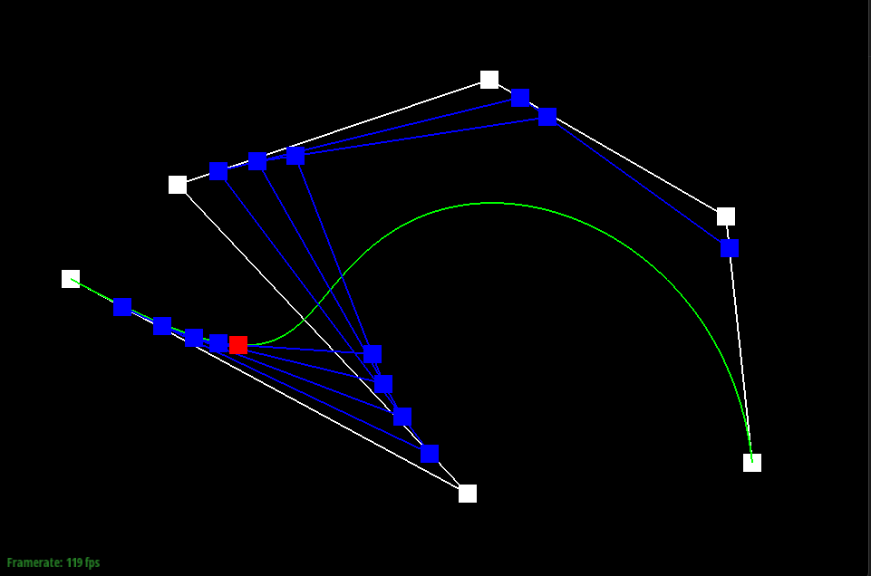
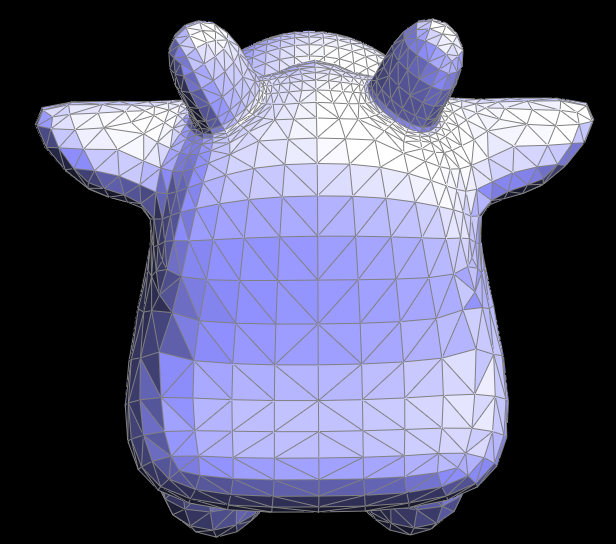
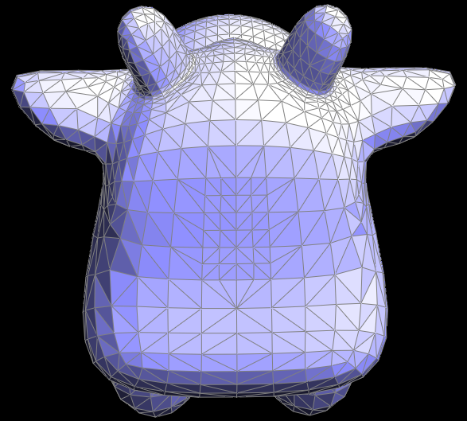

CS184/284A Spring 2025 Homework 2 Write-Up
Link to webpage: cal-cs184.github.io/hw-webpages-su25-awaldman0/hw2/index.html
Link to GitHub repository: cal-cs184/hw2-meshedit-dutch-crunch

Overview
Give a high-level overview of what you implemented in this homework. Think about what you've built as a whole. Share your thoughts on what interesting things you've learned from completing the homework.Section I: Bezier Curves and Surfaces
Part 1: Bezier curves with 1D de Casteljau subdivision
In Homework 1, we displayed the ability to draw objects to the screen through the use of points, lines, and triangles. We were even able to mimic curved shapes by drawing lots of lines/triangles oriented at slightly different angles, giving the appearance of a continuous curve despite its piecewise nature. As mentioned in lecture, however, things like camera paths, object modeling, vector fonts, and CAD design necessitate geometry that is truly smooth in order to function properly. We can acheive the ability to represent smooth curves by employing bézier curves, a type of geometry defined by a number of control points (and parameterized by a value t) that allow us to mathematically derive natural-looking curves that can be scaled infinitely without losing fidelity. In order to get from a list of control points to a curve that can be displayed on screen, we can apply the de Casteljau algorithm for evaluating bézier curves.To evaluate a point on a bézier curve with n control points located at point t (0 ≤ t ≤ 1)
- Using t, linearly interpolate between each consecutive pair of control points, resulting in n-1 intermediate control points.
- Repeat step 1 with the intermediate control points, creating another set of intermediate control points.
- Recursively interpolate until you are left with a single point. This point is located on the curve.
BezierCurve::evaluateStep(), which executes the recursive step of de Casteljau's algorithm. I did this by looping through points and returning a new vector of points called result that contains the interpolated control points.
With the recursive step of de Casteljau implemented, I can now display the full process of evaluating a point on a bézier curve.

|

|
|
|

|

|
|
Now that we can evaluate a specific point along the curve with de Casteljau, we can vary the value of t and see the effects it has on the intermediate evaluation steps.
|

|

|

|
|
Part 2: Bezier surfaces with separable 1D de Casteljau
At the moment, our mesh editor is capable of rendering smooth curves in 2 dimensions, but we want to be able to represent smooth surfaces in 3D. This means we need to add support for bézier surfaces. Currently, my implementation of de Casteljau only works with a 1 dimensional array of control points. In order to extend things to 3D, we can modify it to work with an n × n array of control points, with each row in the array defining a bézier curve. We can then evaluate each row of control points using a parameter u. After doing so, we'll have n points that each lie on a particular curve. Those n points can then be used as control points for another bézier curve parameterized by v. Upon evaluating this new curve according to v, we will be left with a point that lies on a 3D bézier surface. With this knowledge, we can cycle through different values of u and v, allowing us to represent perfectly smooth patches of geometry in our mesh editor.To implement this myself, I had to make changes in 3 functions: BezierPatch::evaluateStep(), BezierPatch::evaluate1D(), and BezierPatch::evaluate(). The code for BezierPatch::evaluateStep() ended up being essentially identical to the code I wrote for Part 1, the only difference being this function uses the value t passed into the function for interpolation rather than using a member varible of the class like before
For BezierPatch::evaluate1D() I needed to take in a vector of control points points and a parameter t and return the point that lies on the curve defined by points. The function works as follows
- Define a variable
curr_stepand set it equal to points - Enter a loop where
curr_stepis set equal to the result ofevaluateStep(curr_step, t), This represents one step of the de Casteljau algorithm. - If the length of
curr_stepis 1 after the call toevaluate_step(), return the point stored incurr_stepbecause we have derived point that lies on the current bézier curve. If not, continue looping.
BezierPatch::evaluateStep() and BezierPatch::evaluate1D() now implemented, I coded BezierPatch::evaluate() (which takes in two parameters u and v) to complete the separable 1D de Casteljau algorithm.
- Define a new vector
control_points_v - Loop through each row of
this->control_points, pushing the result ofevaluate1D(this->controlPoints[i], u)to the back ofcontrol_points_v. - After looping through each row of control points, return the result of
evaluate1D(control_pts_v, v), as this represents the final evaluated point on the bézier surface
bez/teapot.bez evaluated by my implementation.Section II: Triangle Meshes and Half-Edge Data Structure
Part 3: Area-weighted vertex normals
The next improvement to be made in my mesh editor has to do with shading. At the moment, every triangle in a given mesh is shaded flatly, meaning each triangle has one normal vector that determines the color of every pixel inside of it. This makes it difficult to shade objects with smooth, continuous surfaces. Instead, we want to define a normal for every vertex in the mesh, which will allow us to interpolate colors/shading across the triangle using barycentric coordinates, a technique called Phong shading. This results in shading that looks much more natural than flat shading. In order to do this, I implemented area-weighted vertex normals by filling inVertex::normal. My implementation works as follows:
- Define a zero vector
resultthat will hold the final area-weighted normal vector for this vertex. - Set
hequal to the halfedge rooted at the current vertex. -
Enter a do-while loop which traverses through faces incident on the current vertex until we end up back at the halfedge rooted at this vertex.
- Use halfedge traveral operations to locate the other two vertices
v1andv2in the current face. - Calculate the distance bewteen this vertex and the other two vertices in the triangle. Multiply the distances together to get the area of the current face
- Create two vectors, one between this vertex and
v1, the other betweenv1andv2and calculate the cross product - Scale the cross product (normal vector) by the area of the face and add the vector to
result
- Use halfedge traveral operations to locate the other two vertices
- Normalize
resultand return it.
Now that every vertex in a given mesh will have a unit normal vector associated with it when we enable Phong shading, we are able to vastly improve the appearance of 3D ojects, as seen below.
|
|
|
Part 4: Edge flip
When it came to implementing edge flips, I really concerned myself with planning out all of the pointer reassignments that needed to take place so that I would not have to try to debug any confusing errors stemming from incorrect pointers. To make things easier on myself, I assumed every edge flip operation looked like the diagram below, where the halfedge associated with the edge we want to flip is rooted at vertex b:Additionally, I split my code into distinct sections (and added plently of comments) that helped me structure each individual step of the operation because I felt it allowed me to think things through more thoroughly. After performing a boundary check, I grouped my pointer reassignments by face. Referring to the diagram above, I made sure to set the next, twin, vertex, edge, and face pointer for every halfedge in face ABC before dealing with the halfedges in face BCD. I also found it extremely helpful to define variables with meaningful names for the various VertexIters, EdgeIter, and HalfedgeIters I would use throughout the pointer reassignment process (ex. edge_ab, vertex_b, etc.). This coding approach along with my pre-planning helped me sucessfully implement HalfedgeMesh::flipEdge() without a painful debugging process. The pictures below display my mesh editor's edge flipping functionality in action. Due to the fact that this function solely involves pointer reassignments, I can ensure the function executes in constant time, regardless of the size of the mesh.
|
|

|
Part 5: Edge split
Next, I implemented edge splits. I used the same approach as I did for edge flips, only this time I needed to be more careful, as edge splits involve many more pointer reassignments than edge flips and require adding new mesh elements. My implementation ofHalfedgeMesh::splitEdge() creates one new vertex (vertex m), two new faces, three new edges, and six new halfedges. Once again, I referred to a diagram to help me visualize the edge split operation and help me group my pointer reassignments by face.
As before, I did lots of pre-planning when it came to how I would go about assigning pointers. Splitting things up by face proved to be incredibly helpful once again, as it allowed me to break the problem down into several manageable chunks. In my implementation, I chose not to use Halfedge::setNeighbors() because I preferred seeing each pointer assignment written out, thinking it would make it easier to spot any inconsistencies. While I do think this approach helped a bit when it came to compartmentalizing my approach, it resulted in the function taking up almost 150 lines of code, which is not very ideal for readability. Like with Part 4, this operation also runs in constant time given that it is just a bunch of pointer assignments. As seen below, this gives us the ability to edit 3D meshes in a new way. We can even combine edge flips with edge splits to subdivide surfaces, allowing us to increase the resolution of our models.
dae/torus/input.dae without edge splits |
dae/torus/input.dae with edge splits |

dae/cow.dae without any edge operations |

dae/cow.dae with edge flips and edge splits |
While I did not run into any major debugging issues at first, I would eventually have to revisit my implementation for part 5 after completing part 6. After coding Loop subdivision for mesh upsampling, I was running into an issue where upsampled meshes would form geometric inconsistencies, seemingly out of nowhere. Below, I'm using dae/icosahedron/input.dae to demonstate the issue.
|
|
|
|
|
|
a->halfedge() = a_to_m;
b->halfedge() = b_to_m;
c->halfedge() = c_to_m;
d->halfedge() = d_to_m;
Part 6: Loop subdivision for mesh upsampling
For the last part of the assignment, I needed to implement Loop subdivision for mesh upsampling, an incredibly powerful algorithm that can be used to incease the resolution of a given mesh without requiring an artist/modeler to redo anything. Luckily, the spec contained pretty thorough notes on how to go about implementing the algorithm. Additionally,MeshResampler::upsample() already contained comments that outlined a general approach. This allowed me to jump right in, eventually resulting in the following solution:
- Loop through all vertices in the input mesh and calculate their new position. For each vertex
v, I defined a vectororiginal_neighbor_position_sumand valueu, which was equal to either 3⁄16 or 3⁄(8n) depending on the vertex degreen. Then, iterate though all neighboring vertices an add their position tooriginal_neighbor_position_sum. After completing the loop, setv->newPositionto(1 - n * u) * v->position + u * original_neighbor_position_sum. Lastly, setv->isNewto false to ensure that the program knows it is a part of the original mesh. - Next, iterate through every edge in the mesh and calculate the position of the new vertex that will be located in the middle of that edge when we split it later on. Using halfedge traversal, we can get the positions of the four vertices (a, b, c, d) surrounding a particular edge
e. Then, sete->newPositionequal to3/8 * (a + b) + 1/8 * (c + d)as described in lecture. I also sete->isNewto false to make sure it was considered part of the original mesh. - Split every edge in the original mesh in any order. I did this by looping through every edge in the mesh, checking if the current edge was not new and that neither of the vertices that make up the current edge are new. If so, split the edge. After doing so, mark the newly created vertex
mas new and mark edges AM and MD (using the edge split diagram from above as reference) as new. Since edges CM and MB lie in the original edge path, we do not mark them as new. If we did mark them as new, it would cause problems when we flip edges in the next step. At this point I also setm->newPositionequal to the new position value I stored in the edge earlier. - Iterate through all of the edges, chekcing if the current edge is new and, if so, it connects an old vertex to a new vertex. If all of that is true, flip the current edge.
- Lastly, iterate through all vertices and set
v->positiontov->newPosition.
With Loop subdivision now properly implemented, we can take low-poly meshes and turn them into high definition models! When subdividing models sharp edges and corners tend to be rounded out and softened quite a bit as a result of the new position calculations we're doing. The meshes also tend to shrink a bit as well as the vertices contract towards each other.

|
|
|
|
|
Additional Notes (please remove)
- You can also add code if you'd like as so:
code code code -
If you'd like to add math equations,
- You can write inline equations like so: \( a^2 + b^2 = c^2 \)
- You can write display equations like so: \[ a^2 + b^2 = c^2 \]